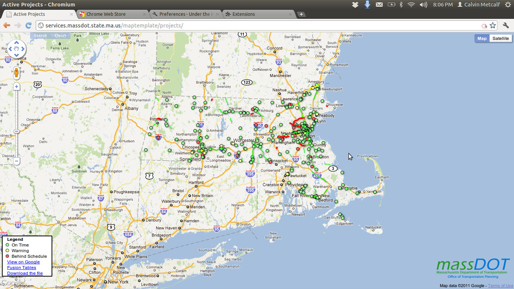
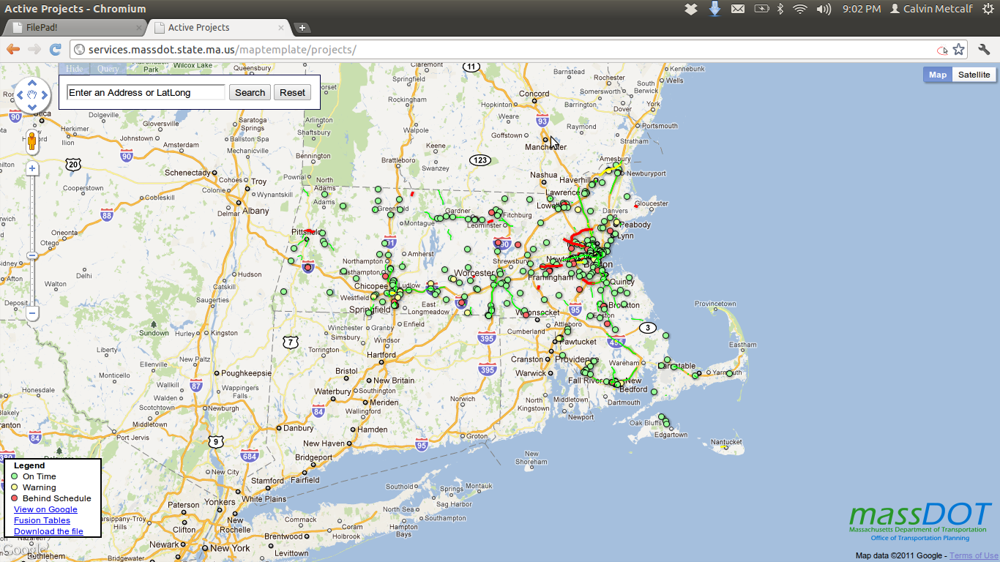
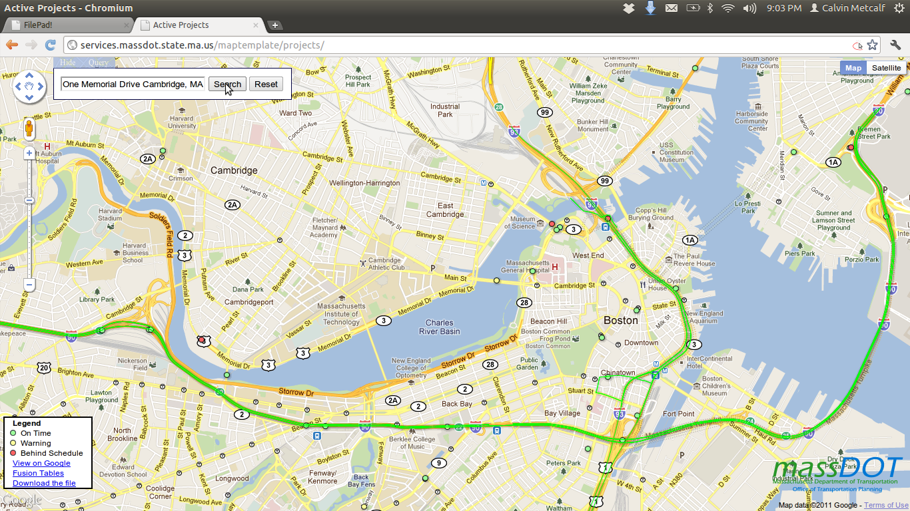
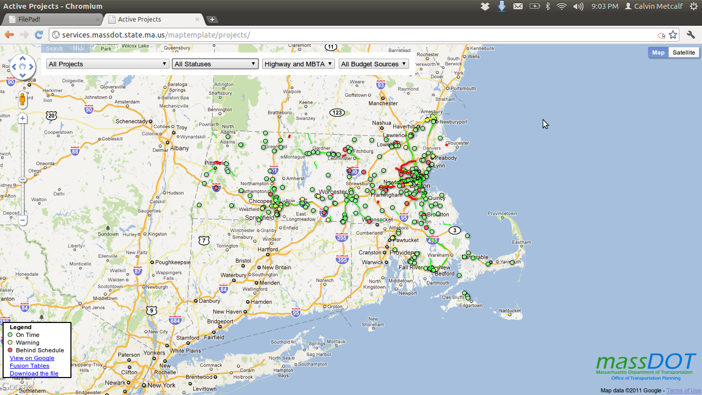
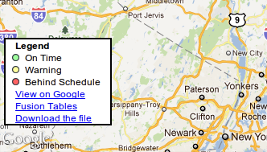

Mapping with Google Fusion Tables
Calvin W. Metcalf
massDOT Office of Transportation Planning
AKA how to make a good looking powerful webmap with:
no budgetno resources beyond your girlfirends spare laptopno programing experiencea static web serverlitterally no knowledge about how javascript worksbut why?
our current web maps did not look goodthey weren't easy to updatethey used flashwhy fusion tables
it's freeit's faster then that any server we could have set up our selves easilypeople already know how to use a google maptheir search is greattheir documentation is fantasticthey can handle a LOT of pointsthe map
our example today will be the first map I made on active construction projectssearch
zoom
query
download the data
how
- get the data cleaned and into fusion tables
- write the html
- write the javascript
about our data
data came from 2 differen sources with different schema
←
→
/
#